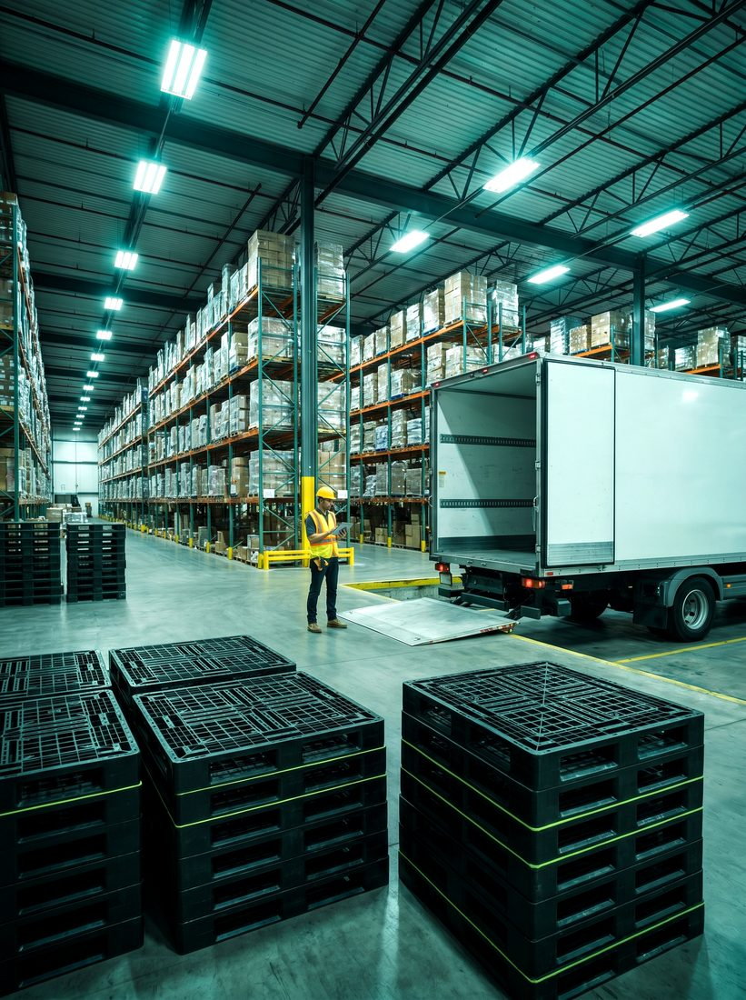
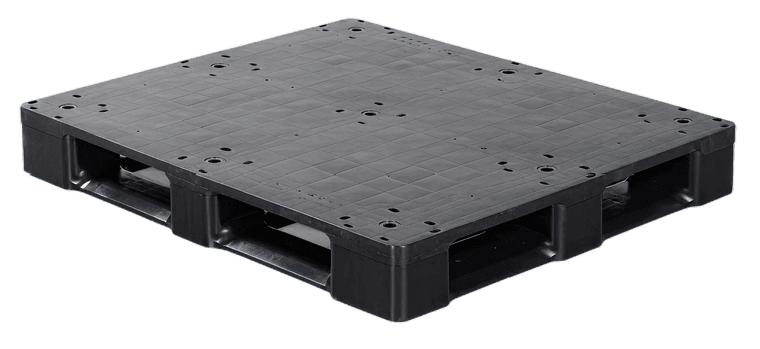
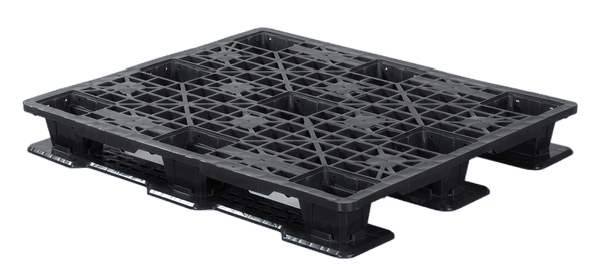
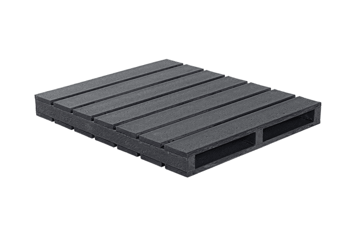

Frenan tu surtido de alta rotación
Se rompen o se atoran en recepción y picking, y cada paro en un CEDIS de alto volumen retrasa el surtido a decenas de tiendas.

Surte tus tiendas sin que la tarima frene tu cadena.
En retail, cada tarima rota, fuera de medida o atorada es un CEDIS más lento, un surtido tardío y producto dañado antes de llegar al anaquel. Te damos la tarima que aguanta el ritmo de tu distribución: alta rotación, racking, última milla y vuelta tras vuelta sin fallar.
Sin compromiso · Respuesta rápida
La tarima parece el insumo más barato de tu cadena, hasta que te frena un CEDIS, te tira producto o te retrasa el surtido a tienda. En retail la tarima no descansa: recepción, almacenaje, picking, ruta y devolución. Si falla, frena el surtido, daña empaque y el producto llega mal al anaquel. La mayoría compra por precio y descubre el costo real en mermas y entregas tardías.
Se rompen o se atoran en recepción y picking, y cada paro en un CEDIS de alto volumen retrasa el surtido a decenas de tiendas.
Astillas, clavos o superficies irregulares maltratan cajas y empaque primario, justo lo que el cliente verá en el anaquel.
La madera se quiebra al segundo o tercer viaje. Repones tarimas todo el tiempo y el costo por trayecto se dispara sin que lo notes.
Racking, transportadores y sistemas automáticos de tu CEDIS exigen medida y resistencia constantes. Una tarima fuera de especificación traba toda la operación.
Tarimas hechas para el ritmo del retail
La tarima de plástico correcta mantiene tu distribución en movimiento: ni paros en el CEDIS, ni producto dañado, ni reposición constante. No importa si hoy usas madera o ya operas con plástico. Cambiamos el punto que te frena por una tarima hecha para el ritmo del retail: resistente, dimensionalmente estable y diseñada para racking, automatización y miles de viajes a tienda. Circuito cerrado, exportación o a la medida: definimos contigo el modelo ideal en tu diagnóstico, según tu rotación, tus rutas y tu sistema de almacenaje.
Soporta carga, rotación y miles de ciclos sin romperse; superficie lisa, sin astillas ni clavos, que protege empaque y producto.
Medida constante viaje tras viaje, compatible con racking, transportadores y sistemas automáticos sin atascos.
Fabricada con material reciclado y reutilizable, parte de nuestro programa de economía circular.



La tarima barata no es la de menor precio: es la que no te frena un CEDIS, ni te tira producto, ni te retrasa el surtido. La madera se compra barata y se repone una y otra vez. El plástico se compra una vez y rinde miles de viajes a tienda.
Cotizamos y resolvemos cuando tu operación no puede esperar.
Capacidad de volumen y control de calidad de principio a fin.
Diagnóstico, pruebas en tu operación y soporte en la implementación, para que la tarima rinda al máximo desde el primer día.
De la primera llamada a la tarima correcta, en tres pasos claros.
En 20 minutos entendemos tu operación, tu normativa y tu racking. Identificamos el riesgo real que representa tu tarima actual.
Probamos la tarima correcta en tu operación, con tu producto y tus condiciones. Nada de promesas en papel: validamos en campo.
Te entregamos la recomendación de la tarima ideal y una cotización clara, con el ahorro proyectado frente a lo que usas hoy.
Cuéntanos cómo es tu operación y te recomendamos la tarima ideal.
Una sesión de 20 minutos sin costo ni compromiso. Sales con una recomendación clara de la tarima ideal para tu flujo y tu sistema de almacenaje, que te ayude a reducir mermas y costo logístico.